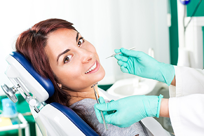
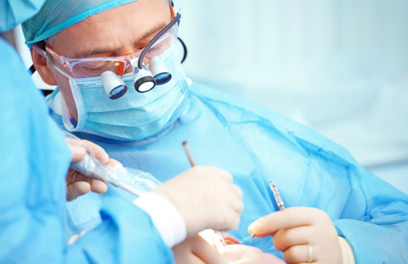
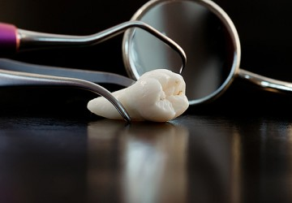

 Хирургическая стоматология занимается лечением заболеваний полости рта с помощью хирургических методик.
Современные методы хирургии в большинстве случаев направлены на сохранение зуба, предполагая удаление лишь в исключительных случаях.
Хирурги стоматологи работают в комплексе с терапевтами, ортопедами и ортодонтами. Разумеется, сохранить разрушенный зуб можно не всегда. В случае если в области зуба имеется воспалительный процесс, присутствует сильное разрушение или кариес корня, инфекция влияет на весь организм в целом и это является безусловным показанием к удалению.
Во всех остальных случаях врач предложит Вам различные варианты лечения, поскольку удаление даже одного зуба может сказаться на состоянии всех остальных зубов и привести к проблемам с челюстными суставами.
Показанием к удалению служит также такая проблема как ренетация – заболевание зуба, когда он не может прорезаться в полость рта. Подобный процесс часто связан с зубами мудрости. В области прорезывания развивается воспалительный процесс, который можно увидеть при помощи панорамного снимка. Единственный выход – удаление.
В данном случае обязательно после операционное наблюдение, в течение трех дней возможно возникновение припухлостей щеки и затруднение открытия рта.
Опытный хирург стоматолог может также помочь Вам сохранить больной зуб. Например, в ситуации, когда не поддается лечению только один из корней трехкорневого зуба. Врач удалит поврежденный канал, оставив нетронутыми здоровые корнии полную функциональную активность зуба.
В случае если поврежден двухкорневой зуб, применяют коронко-радикулярную сепарацию – коронку зубараспиливают на две части и разъединяют корни, получая, таким образом, два однокоренных зуба.
Вмешательство хирурга требуется также при травмах верхних зубов, которые могут привести к выпадению. Поврежденный зуб необходимо вернуть в нормальное положение, провести шинирование, закрепление зуба стекловолоконной лентой, которая практически незаметна и не вызывает ощущения дискомфорта. В последующем потребуется лечение корневых каналов.
К зубосохраняющим операциям относят также удаление кист и гранулём зуба, разные методики лечения пародонта (вестибулопластика, лоскутные операции, кюретаж). Образующиеся в результате возникновения инфекции кисты и гранулёмы при отсутствии лечения опасны серьезными последствиями, такими как хронический гайморит, внешняя деформация лица и, даже, перелом челюсти.
Хирург удаляет очаги инфекции и сохраняет сам зуб, операция длится около 20-30 минут и проводится под местным обезболиванием.
Довольно часто встречается также такая проблема, как малые кисты слюнных желёз нижней губы. Возникающий в результате прикусывания шарик не причиняет боли и успешно удаляется за 20 минут.